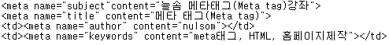

meta태그란?
태그는 HTML 문서가 어떤 내용을 담고 있고, 문서의 키워드는 무엇이며, 누가 만들었는지 등의 문서 자체의 특성을 담고 있습니다.
태그는 문서의 헤더부분 (
와 사이)에 위치하여야 합니다.태그에서 가장 일반적으로 사용되는 속성은 name, content 속성입니다.
name 속성값으로는 subject, title, author, keywords 등이 있습니다.
검색엔진에게 문서의 내용을 요약해 주는 역할을 담당한다고 할 수 있습니다.
그럼 name 속성값으로 keywords를 지정하고, content에 "meta태그, HTML, 홈페이지제작" 이라고 지정했으니
검색엔진에서 홈페이지 제작이라고 입력하면 이 페이지가 상단에 나올까요?
검색엔진이 태그를 수집하여 참고는 합니다만 이를 상업적으로 활용하는 홈페이지가 너무 많기 때문에 그 효과는 불분명한 실정입니다.
태그는 위와같이 검색엔진에게 정보를 전달할 뿐 아니라 웹 브라우저에게도 정보를 전달하는 역할을 합니다.
웹 브라우저에게 정보를 전달하는 대표적인 경우는 아래와 같이 2가지를 생각할 수 있습니다.
홈페이지의 주소가 바뀌었을 경우에 사용하는 태그로 5초뒤에 url 속성값으로 지정한 페이지로 이동한다는 의미입니다.
이렇게 이동하는 것은 하이퍼링크를 눌러서 이동하는거와는 다른 의미를 갖습니다.
하이퍼링크를 누른다는것은 한 페이지를 읽고 있다가 다른 페이지로 이동한다는 의미이지만,
태그를 이용한 페이지 이동은 http-equiv 속성값을 지정된거와 같이 refresh 한다는 의미입니다.
즉 위와 같은 태그가 입력된 페이지는 읽지 않은걸로 인식하겠다는 의미입니다.
그리고 한글로 작성된 홈페이지라는것을 웹 브라우저에게 알리기 위해서는 아래와 같이 태그를 지정해 줍니다.
이렇듯 웹 브라우저에게 정보를 전달하기 위한 태그는 http-equiv 라는 속성을 사용합니다.